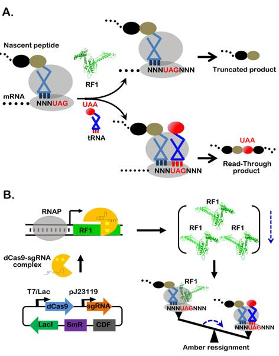

周德敏课题组
首页
导师介绍
课题组成员
研究方向
学术论文
精彩掠影
新闻动态
English
当前位置：
首页
>
周德敏课题组
>
新闻动态
新闻动态
Congratulation! 张博和杨琦共同一作的论文被Scientific Reports接收
Congratulation! 张博和杨琦共同一作的论文被Scientific Reports接收：
论文题目：CRISPRi-Manipulation of Genetic Code Expansion via RF1 for Reassignment of Amber Codon in Bacteria
论文作者：Bo Zhang
1
‡
, Qi Yang
2
‡
, Jingxian Chen
1
, Ling Wu
1
,
Tianzhuo Yao
1
,
Yiming Wu
1
, Huan Xu
1
, Lihe Zhang
1
, Qing Xia
2
*, Demin Zhou
1
*

Schematic representative of
assignment of amber codon as either a stop or encoding signal in genetic code expansion.
点击次数：
2199
更新时间：2015-12-28 09:08:12 【
打印此页
】 【
关闭
】
上一条：
周德敏教授课题组在生物大分子药物研发领域又取得新进展
下一条：
好消息！王晗和徐仁洋共同一作论文被EJMC接受